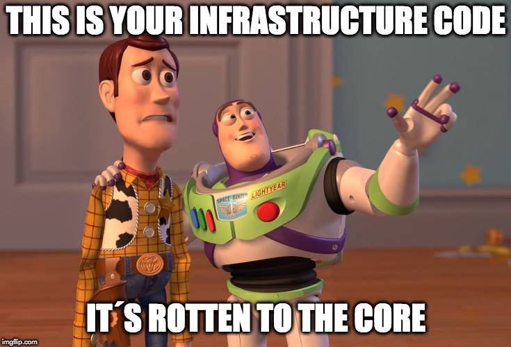

automation happens when you meet a problem
you never want to solve again
Congrats!
you established a new tool
not all automation is created equal

Rules of the game
write ansible roles
- destinct purpose
- configurable
- test it
- reusable
- share it with the community